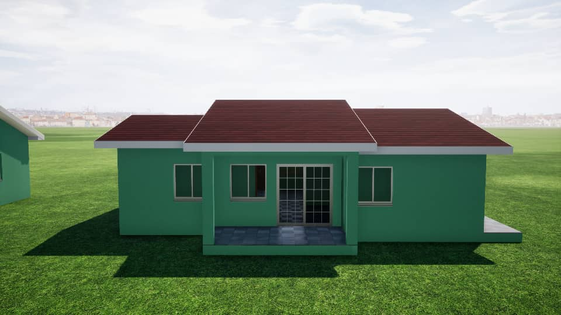

Titre produit
Grominankro est un site situé à l’entrée de Yamoussoukro en venant d’Abidjan. Il y a une cinquantaine de lots de 600, 700, 800 m² disponible en ce moment. C’est un lotissement résidentiel couvert par un ACD global. Grominankro est un site situé à l’entrée de Yamoussoukro en venant d’Abidjan. Il y a une cinquantaine de lots de 600, 700, 800 m² disponible en ce moment. C’est un lotissement résidentiel couvert par un ACD global.